The ten older boards and three integrated boards now share the Tavus foundation, Nile palette, typography and component guidance. The social board now contains seven newly authored compositions. Geometry candidates retain study status.
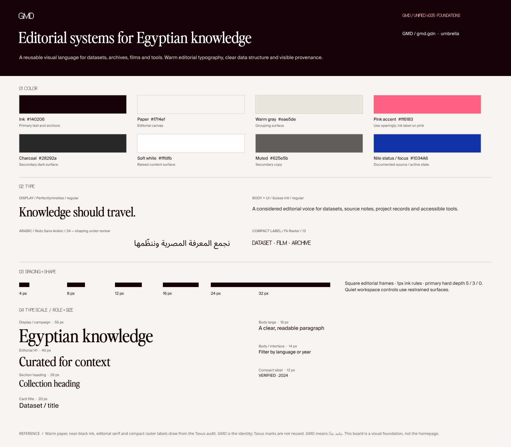
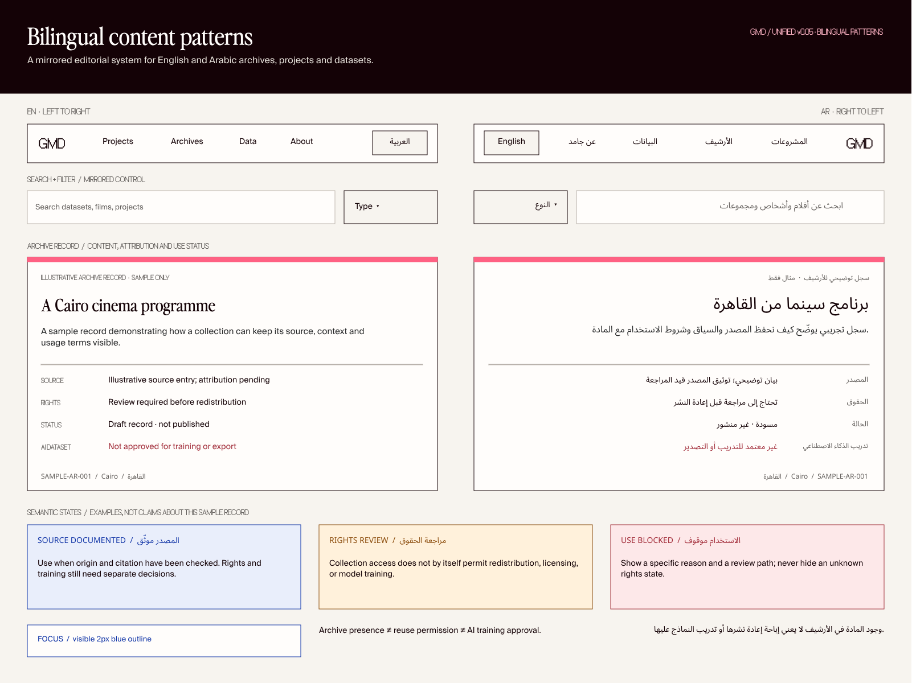
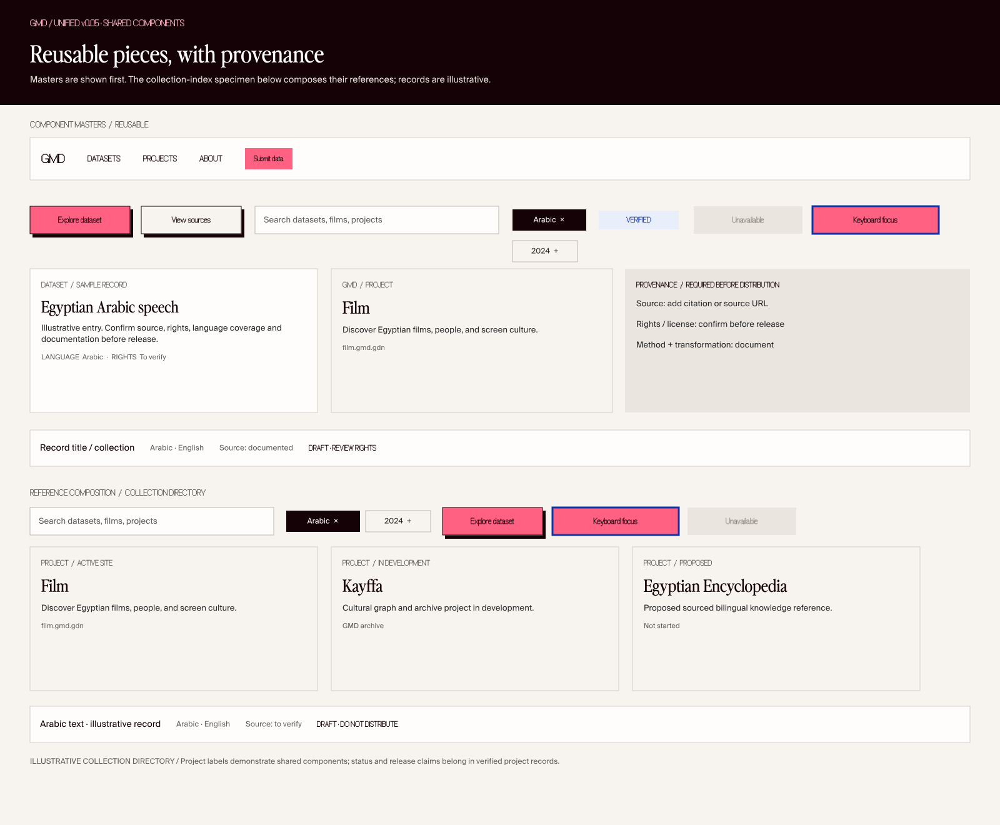
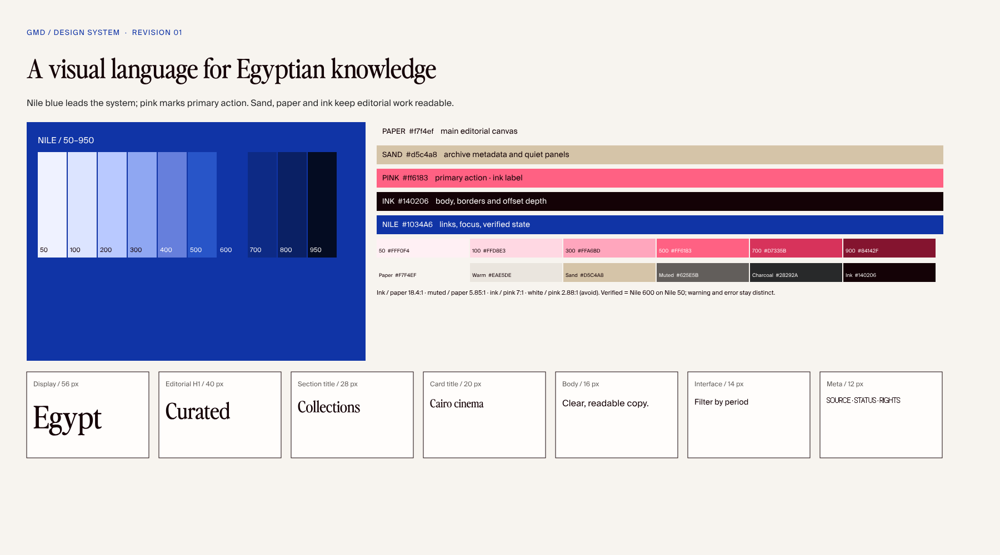
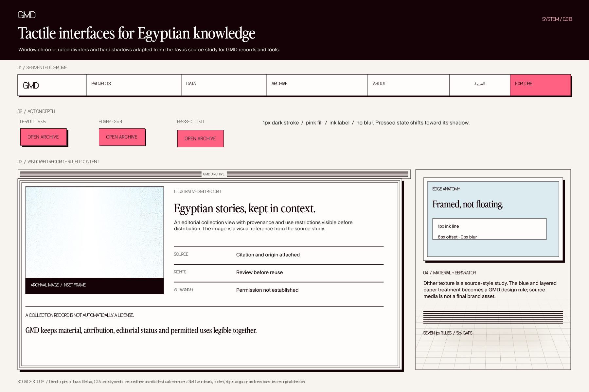
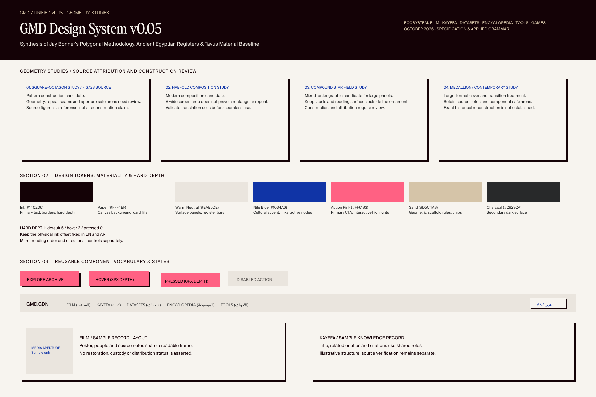
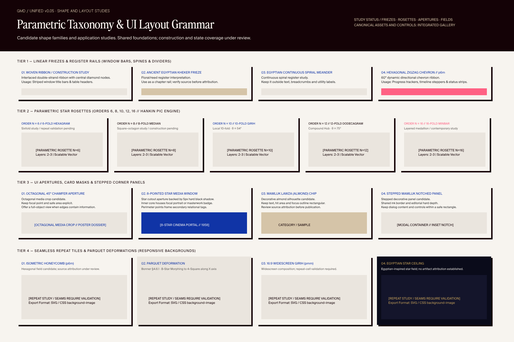
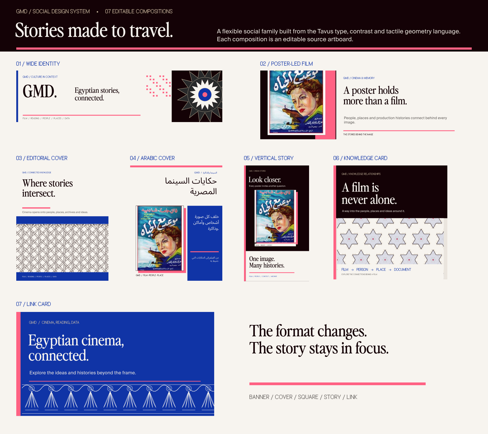
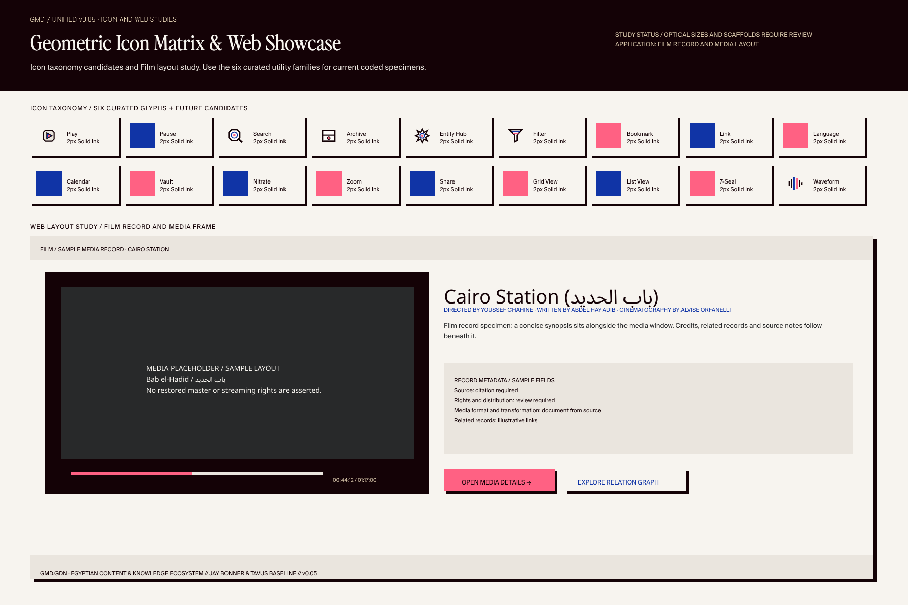
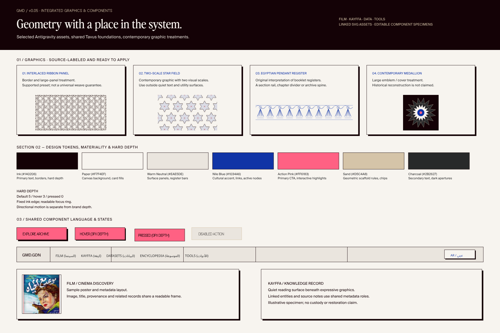
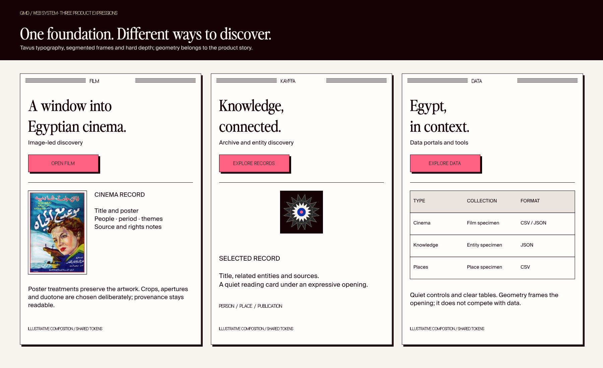